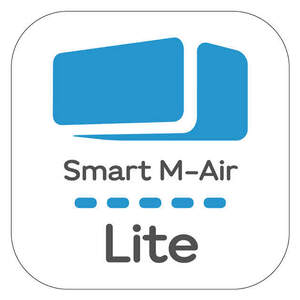

Trade Mark Journal No.2026/009 27 February 2026
UK00004336518 6 February 2026 (9,11,42)

- Class 9
- Measuring apparatus thermometers, not for medical purposes; thermo-hygrometers; hygrometers; heat regulating apparatus; diagnostic apparatus, not for medical purposes; power distribution or control machines and apparatus; electrical switches; remote controls for air-conditioning apparatus; remote control apparatus; telecommunications apparatus; application software for remote controlling and managing air-conditioning apparatus; application software for smartphones; computer terminals; Internet servers; microprocessors; data processing apparatus; touch panels; downloadable image files; downloadable graphics for mobile phones; electronic publications, downloadable; none of the aforementioned goods being related to locking, opening, alarms, access control and security systems, solutions and/or devices; all of the aforementioned goods being related to air conditioners and sensing, monitoring, messaging, notifying and/or controlling systems of air conditioners.
- Class 11
- Air conditioners; air conditioning apparatus; refrigerating appliances and installations; heating elements; space heating apparatus; water heaters.
- Class 42
- Development of computer platforms monitoring of computer systems by remote access; updating of computer software; updating of smartphone software; computer software consultancy; computer programming; technical advice relating to operation of computers and smartphones; software as a service [SaaS]; cloud computing; platform as a service [PaaS]; web site hosting services; server hosting; none of the aforementioned services being related to locking, opening, alarms, access control and security systems, solutions and/or devices; all of the aforementioned services being related to air conditioners and sensing, monitoring, messaging, notifying and/or controlling systems of air conditioners.
MITSUBISHI HEAVY INDUSTRIES THERMAL SYSTEMS, LTD.
Representative: Beck Greener LLP